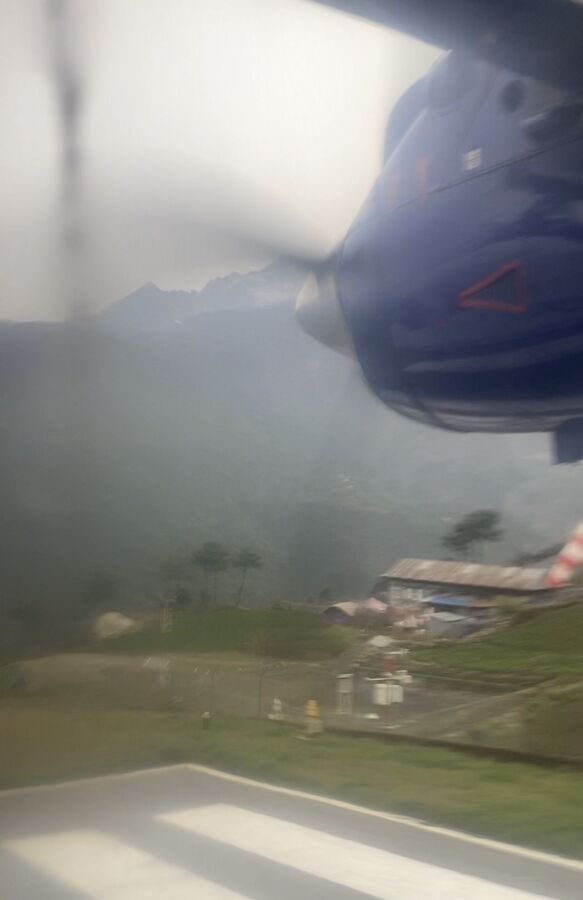

Bugün zamanı gelmişti. Medeniyete geri dönüyorduk.
Gece o kadar soğuk değildi ama yine de çok kötüydü. İkimiz de çok öksürüyor ve neredeyse hiç yutkunamıyorduk. Görünüşe göre antibiyotik etkisini göstermeye başlamıştı, çünkü ikimiz de iyice terledik.
Saat 5:30'da Naran kapımızı çalıp bizi aldı. Çantalarımızı çoktan toplamış ve hazırlanmıştık. İlk kez ağır trekking ayakkabıları olmadan.
Misafir salonunda bugün geri uçacak olan diğer grupların katılımcıları vardı. Kahvaltıda hepsi çok neşeliydi; biz ise artık nezlemizle daha iyi ilgilenebilecek olmanın rahatlığı içindeydik.
Bu saatte pek bir şey de yiyemiyorduk, ama antibiyotiğin bir sonraki tabletini alabilmek için en azından biraz tost yedik.
Sonra her şey oldukça hızlı gelişti: Herkes hazırlandı ve Buddha Lodge'a sadece birkaç metre uzaklıktaki terminale yürüdü. Naran bütün evrakları çoktan halletmişti, bagajlar tartıldı ve uçak biletlerimizi aldık.
Sonra veda başladı. Son günlerde sık sık turistler hakkında konuşmuştuk ve aslında hep biraz çekingen olan Naran bize düşünce dünyasına bir pencere açmıştı. Bu yüzden bizimle iyi vakit geçirdiği sonucunu çıkarabileceğimi düşünüyorum. Özellikle aşırı yorgunluğa ve ağır nezleye rağmen sonuna kadar dayanmış olmamız onu gerçekten etkilemişti.
Biz ise Naran'ı çok sevimli, şefkatli ve yetkin bir insan olarak tanıdık ve takdir ettik. Bize sürekli iyi baktı, sağlık durumumuzu hep sordu, gerektiğinde bizi uyardı ve trekking turunu makul sınırlar içinde sonuna kadar yapmamıza izin verdi. Bizim için fazla olsaydı müdahale edeceği hissini hep yaşadık. Şimdi geriye dönüp baktığımda onun değerlendirmesinin doğru olduğunu söylemeliyim. Yolun birçok yerinde kendimizi aşmamıza yardımcı oldu.
Her halükârda ikimize de beyaz birer ipek eşarp verdi. Burada âdet böyle; 2009'dan kalan benimki de gerçekten hâlâ evde duruyor. Sarıldık ve birkaç kez daha karşılıklı teşekkür ettik.
Vedadan sonra güvenlik kontrolünden geçtik ve 6:20'de yürüyerek yeni inmiş uçakların park alanına çıktık. Sonra binmek, kemerleri bağlamak, kulak tıkaçlarını takmak ve uçuş başladı. Benim için de bir ilkti, çünkü 2009'da Ralf ve ben Tengboche Manastırı'ndan doğrudan Katmandu'ya helikopterle uçmuştuk. Bilindiği gibi Lukla'daki iniş pisti tam dağ kütlesinin önünde bitiyor; aynı pist kalkış pisti olarak dik bir yamaçta sona eriyor. Yani pilotun uçağı en geç orada havalandırması iyi olur. Her halükârda galiba başardı, yoksa bunu yazıyor olamazdım.

Uçuş yaklaşık 30 dakika sürdü. Bagajlar oldukça hızlı geldi ve transferimiz de oradaydı. Lukla'ya uçarken acentede bıraktığımız çantamızı bile yanında getirmişti.
Yine de havalimanındaki bütün durum çok tuhaftı. Önce inanılmaz kalabalıktı; dağlardaki 14 günlük sessizlikten sonra bu elbette daha da çok dikkatimizi çekti. Sonra acentemizin baş organizatörü vardı; küçük, biraz tıknaz, şapkalı bir adam; telaşla oraya buraya koşturuyor, telefonla konuşuyordu; sonunda bizden 20 dakika daha beklememizi rica etti. Acenteden biri gelecekmiş, en azından el kol hareketlerinden ben bunu çıkardım.
Yanında, o da kısa boylu, bagaj sorumlusu vardı. Baş organizatörle sürekli iletişim halindeydi. Görevi: bagajlarımızı başıboş bırakmamak; çalınabileceği için değil, başka biri bizden taşıma işini alıp bahşişi cebe indirebileceği için. Bagaj sorumlusu en çok parmaklarındaki altın yüzükler ve arka cebindeki kocaman bir havuçla dikkat çekiyordu.

Sonra birden yine de yola çıktık. Baş organizatör ve bagaj sorumlusu el işareti verdi, biz de takip ettik. Biraz ileride bir otoparka geldik. Orada baş planlamacı duruyordu ve dörtlü grubumuzu önce durdurdu. Hızla etrafımızda beş altı adam daha toplandı. Planlamacı yaklaşık 60 yaşında, göğsü biraz basık, buna karşılık küçük bir göbeği olan, üzerinde rengârenk, çok dar, V yakalı bir kazak olan bir adamdı. Ve galiba şalvar gibi bir pantolon ve sandalet giymişti. Bronzdu, en az bir küpesi ve alnında renkli bir nokta vardı. Elinde büyük bir dosya vardı, el kol hareketleri yapıyor, arada baş organizatöre dosyayla küçük bir şaplak da atıyordu. Her halükârda büyük bir merhabalaşma.
Yeşim'in ve benim sadece otele gitmek istediğimizi söylememe gerek yok herhalde.
Neyse, bu tuhaf olay bir şekilde çözüldü, geçmemize izin verildi ve baş organizatör, bagaj sorumlusuyla birlikte arabayı iterek işi kapmaya çalışan bir iki taksiciyi daha savuşturdu. Sonunda bir şoför başardı.
Çantalar arabaya yüklendi, bagaj sorumlusuna bahşiş verdim ve baş organizatör taksiciye ödeme yaptı. Sonra nihayet yola çıktık.
Trek sonrası günler için kuzeydoğudaki Hyatt Regency'yi ayırtmıştım. 5 yıldızlı bir otel; gerçi Nepal'in gelişmekte olan bir ülke olduğunu ve 5 yıldızlı otellerin de buna göre olduğunu hep söylemek gerek. Otel park benzeri bir alanda biraz izole bir konumda. Bu sayede gerçekten çok sakin.
Sıcak bir şekilde karşılandık ve resepsiyona götürüldük. Orada formaliteleri hallettik ve elbette hemen yerleşebileceğimiz bir oda umduk. Saat daha 9:30'du. Maalesef öyle olmadı. Saat 11'e kadar beklememiz gerekiyordu. Zaten kahvaltı yapmak istediğimiz için umursamadık.
Ve kahvaltı salonuna girdiğimizde sevincimiz büyüktü. Taze meyve suları, meyve, salata, kruvasan, hamur işleri. Elbette sıcak, çoğunlukla Hint mutfağı da. Bize yumurta yapma nazik teklifini teşekkür ederek geri çevirdik, çünkü 14 gün boyunca hep yumurtalı kahvaltı yapmıştık.
Yani 5 yıldızlı bir otelde kahvaltıda oturuyorduk – itiraf etmeliyim ki bu bizim için yeni bir şey değil – ve karpuz suyuna ve havuca küçük çocuklar gibi seviniyorduk. Ve sevinçten gülüyorduk. Çok uzun zamandır yaptığımız en güzel kahvaltıydı.

Kahvaltıdan sonra lobide kahve içtik ve sonra nihayet odayı aldık. Ama istediğimiz oda değil, onu herhalde yarın alacağız. Ne olursa olsun, sadece herhangi bir odaya girmek istiyorduk.
Oda harika. Her oda harika olurdu. Sıcak. Akan sıcak su var. Elektrik var. Tuvaletin yanındaki bir kovaya değil, tuvalete atılabilen tuvalet kâğıdı var. Ha, bir de tuvalet var. Ve bir yatak. Kocaman bir yatak. Gerçekten çok sevindik.
Günün geri kalanında odada kaldık. Yemek sipariş ettik, uyuduk ve 500 Bollywood kanalından birini izledik.
Ve şimdi saat 3'ü geçti, artık uyumalıyım. İyi geceler!